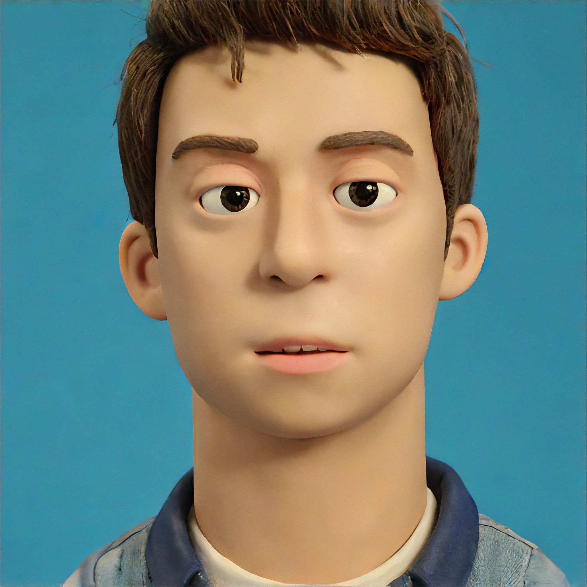
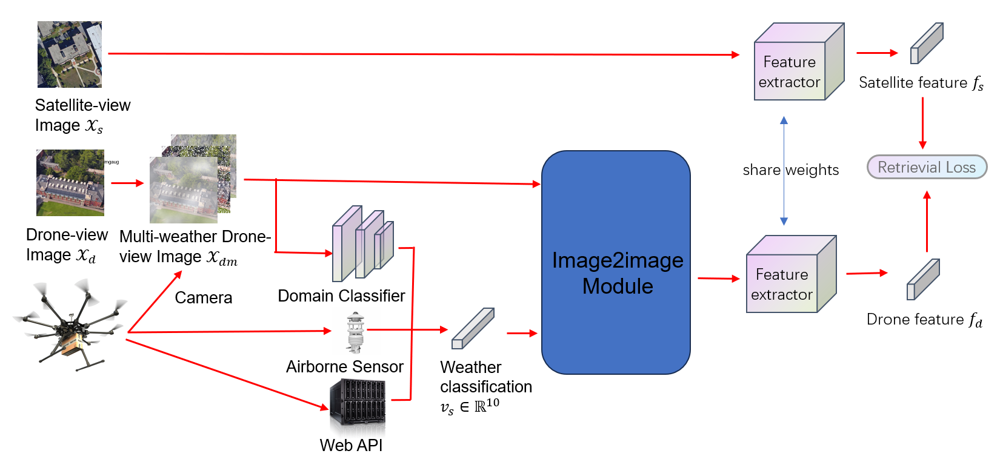
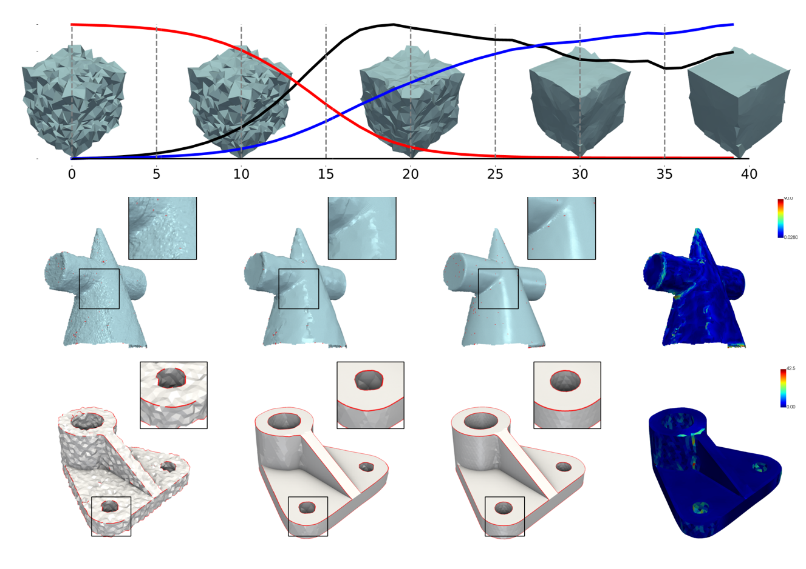

|
Yiqing Li (李逸清)
Email: liyiqing_cs[at]163.com/206001870[at]nbu.edu.cn
Github CV
ORCID
zhihu
I am Yiqing Li (李逸清). My study interests lie in Computer Graphics and Computer Vision.
I obtained my bachelor degree of Computer Science and Technology from Ningbo University, China, 2024.
|

|
|
News!
2024.08: FINALLY! Our paper: Evaluating Domain Translation Approaches for Drone-Based Geo-Localization in Adverse Weather is accepted by ACM MM 2024 Workshop: UAVs in Multimedia.
2024.06: Bachelor degree obtained, with Thesis evaluated as Excellent.
|
|

|
Evaluating Domain Translation Approaches for Drone-Based Geo-Localization in Adverse Weather
Yiqing Li, Shuke He, Chen Jin*
ACM MM 2024 Workshop on UAVM
Rating: 5 5 8
[Paper]
[Code]
Technical report of our solution for ACM MM 2024 Competition: Multimedia Drone Satellite Matching Challenge In Multiple-environment.
Abstract
The UAVs in Multimedia (UAVM) 2024 competition aims to improve the performance of Drone-based Geo-localization task under extreme weather. On the task, we found the simple augmentation on training set can significant improve performance with zero-cost and won the 6th Place among 22 teams on this competition. Furthermore, based on our observations, we propose a domain translation framework to further enhance the performance of any model. We transfer images from a multi-weather domain to a normal domain using GAN and introduce FFM to further reduce computational costs. Our experiments revealed that while this strategy indeed improves image quality, it does not translate into improved recognition accuracy. Thus, while our strategy is supported by experimental evidence, practical methods for achieving performance improvement remain elusive. We hope this report provides valuable insights for developers and researchers in this field.
|
|

|
Feature-preserved Mesh Denoising via Sparse Optimization
Supervised by Lect. Xianzhong Fang
Ningbo University degree project
Top 20% Bachelor Thesis
[Thesis]
[Code]
[Slide]
[Supplements]
Reproducing L0 mesh denosing method via Eigen. Proposing a time-efficient approach to achieve 100x speed up. Conducting a CUDA implementation to make L0 method nearly as fast as filtering based method.
2023.06-2024.06
Abstract
In the field of geometric processing, mesh denoising plays an important role. Meshes obtained from 3D reconstruction often contain noise that cannot meet requirements and thus require mesh denoising as a post-processing step. Feature-preserving mesh denoising algorithms aim to remove noise while preserving features and are considered state-of-the-art in mesh denoising. However, feature-preserving mesh denoising algorithms based on sparse optimization are superior in performance but time-consuming.
This paper investigates feature-preserving mesh denoising algorithms, analyzes representative works and evaluation metrics in this direction, and focuses on the L0 method for algorithm reproduction and experimentation. An efficient optimization scheme is proposed around the L0 method, along with a parallelized implementation, to improve efficiency.
The main contributions of this paper are as follows:
- Independently reproducing the L0 method and conducting extensive related experiments.
- Proposing different optimization approaches to address the slow solving speed of optimization-based methods and conducting experiments, ultimately presenting a concise and effective optimization solution.
- Designing and implementing a parallelized L0 algorithm based on 2, enabling efficient feature-preserving denoising of medium to large-scale meshes.
|
|
|
2024.03 - 2024.07: Research Intern in Zhejiang Scientific Research Institute of Transport, Hangzhou, China. Mentored by Shuke He and Dr. Wei Shao. Worked on Drone-based Geo-localization and Multi-Agent 3D Detection.
|
|
|
2023.05 - 2023.06: Intern in CV-lab, Ningbo Institude of Material Technology & Engineering, CAS. Supervised by Kangkang Song. Worked on the development and deployment of Lite-HRNet based Infrared Pose Estimation.
|
|
|
2022.06 - 2023.03: Participated at Prof. Yuqi Li's CPRE group, Ningbo University. Worked on Physics Augmented Neural Radiance Fields.
|
|
|
2020.09 - 2024.06: B.Eng. in Faculty of EECS at Ningbo University, China. Major in Computer Science and Technology.
|
|
Awards & Scholarships
MCM/ICM 2022: Meritorious winner (top 6% out of 12,100 teams)
Chinese Mathematics Competition 2022: Provincial Second Prize
|
|
|
Do some cool and solid research! Build stuff that I am proud of!
Last modified: 2024/10/23
|
|
{kind=link}
{kind=link}
{kind=link}
{kind=link}
{kind=link}
{kind=link}